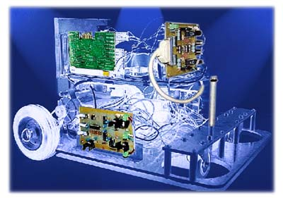

Enero 1999: Robots Basados en Linux |
|

Editorialpor Ismael RipollCuando entré a formar parte de LinuxFocus lo hice pensando que hacía falta una revista en castellano que tratara temas relacionados con GNU/Linux. Por entonces, todos los artículos que llegaban a LF estaban escritos en inglés y el trabajo consistía fundamentalmente en traducirlos al castellano. No era fácil prever la gran aceptación que LF iba a tener tanto en España como el resto de países hispano parlantes. Aceptación que se demuestra por el gran número de colaboradores con los que cuenta, el elevado número de lectores, así como por el propio reconocimiento de la prensa escrita. Mucho antes de la creación de LinuxFocus, proyectos como LuCAS (Linux en CAStellano) o SLUG (Spanish Linux User Group) ya producían documentación en castellano sobre Linux. El objetivo principal de estos proyectos ha sido, y continua siendolo, traducir al castellano la documentación producida en inglés en el proyecto LPD (Linux Documentation Project). El objetivo de LinuxFocus es similar en cuanto a producción de documentación en castellano, pero desde un punto de vista mucho más educativo, y por que no, divertido. Pensamos que tan importante es que los contenidos de los artículos sean de una buena calidad técnica, como que la presentación sea lo más cuidada y amena posible. LinuxFocus no es solo un hobby y una fuente inagotable de entretenimiento para los que formamos parte de este proyecto, sino también una forma de ampliar el ámbito profesional. Desde el que colabora como autor enviando artículos, como los que trabajan en las traducciones y las revisiones, están continuamente ejercitando y demostrando unas habilidades y conocimientos que son necesitados por muchas empresas. LinuxFocus es un punto de encuentro entre personas con conocimientos y ganas de comunicarlos, y lectores que no se contentan con arañar en la superficie de un tema, sino que demandan una información más completa. Bienvenida de nuevoDespués de mucho tiempo, Esperanza Sepulveda vuelve a formar parte de la familia de LinuxFocus. Gracias a su experiencia, LinuxFocus no sólo disfrutara de ilustraciones de alta calidad, sino que también conseguiremos reducir el tamaño de las imagenes de la revista. Ella es diseñadora gráfica, licenciada en Bellas Artes por la Facultad de Bellas Artes de Madrid. Actualmente está cursando estudios de post-graduado en la misma universidad y participa en un proyecto de investigación sobre medios digitales y arte. Trabaja en el departamento de diseño gráfico en una empresa y tiene experiencia en diseño y retoque gráfico. Su interes en la internet como medio de comunicación le ha llevado a participar en LinuxFocus. |
|
ContenidosHardware
UNIX Basics
Software
Programación
|
|
|
Páginas Web mantenidas por Miguel Angel Sepulveda & Ismael Ripoll © 1999 LinuxFocus |